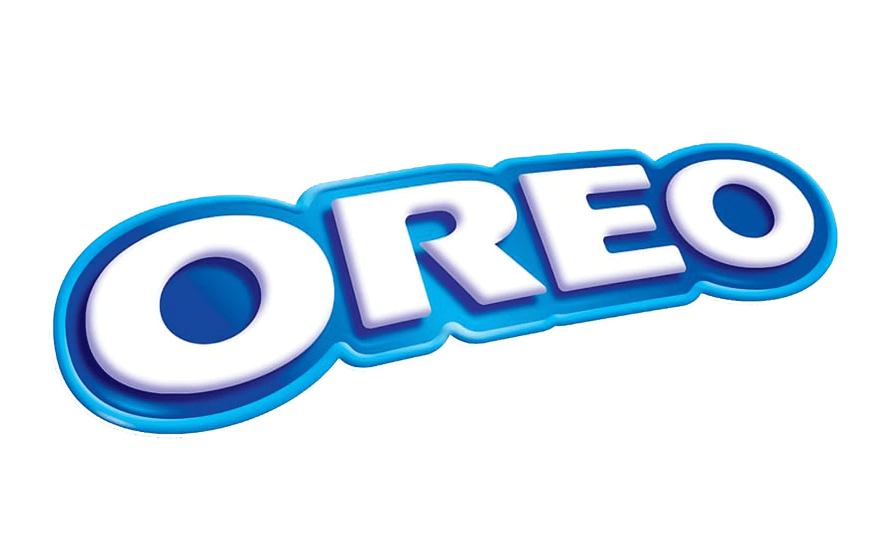

When I was a kid, it seemed like everything was bigger, brighter, and more interesting. Or maybe I was just smaller and hadn’t seen as much as I have now. Nevertheless, the world is increasingly shifting from color to monotone, from funky design to copy-and-paste houses. The question I want to answer is:
How (and why) has the world, specifically logos, shifted from interesting to dull?
We begin this journey in the 1970s, around 50 years from today (2026). Scroll through these polaroids to see how things have changed since then.


The common trend is that we’re losing color across all aspects of life. The same thing is happening to logos.
Let’s take a look at some examples dear to American culture, which made all the Europeans go crazy when they visited for the World Cup: American chain restaurants.
My childhood favorite was Applebees (it was my first time encountering pink lemonade the size of my head). Taking a look at the complexity and color palette of its first logo in 1980 versus present day, a lot has changed.


Here’s a full history of its logos since 1980.


This trend of simplification isn’t exclusive to Applebees, though, and certainly not the restaurant industry.



Across different industries and brands, how does the change in complexity and color stack up against each other? Use the tool below to explore!